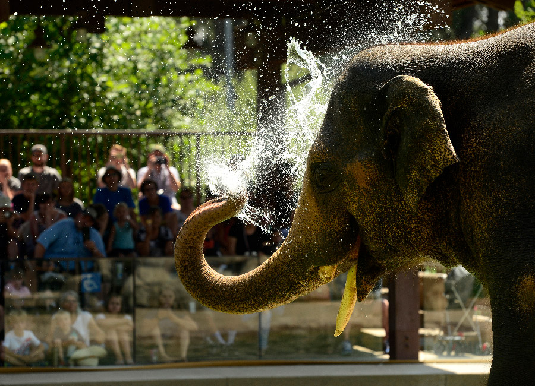

Elephants
As you enter one of the newest additions to the denver zoo you find yourself walking under a giant bridge for the animals to walk over. The Asian atmosphere becomes much more prevolent and you can even hear the sounds of people, animals and motorbikes being projected as if you had actually traveled to Asia. From there the elephants are hard to miss. In fact their presensce alone makes you want to visit the rhinos as well. There are two elephants outside near a giant pool of water with more presumably inside cooling off.
It must be your lucky day! One of the elephants plunges into the water with a huge splash. It then uses its trunk to splash and spray water onto itself, and even managing to annoy the other elephant in the enclosure. All the fun in the water makes you want to visit another animal that lives in the water.
Before you head on your way, you check the enclosure to learn some new facts about elephants. It says:
Trunks and tusks
Elephant ears radiate heat to help keep these large animals cool, but sometimes the African heat is too much. Elephants are fond of water and enjoy showering by sucking water into their trunks and spraying it all over themselves. Afterwards, they often spray their skin with a protective coating of dust.
An elephant's trunk is actually a long nose used for smelling, breathing, trumpeting, drinking, and also for grabbing things—especially a potential meal. The trunk alone contains about 40,000 muscles. African elephants have two fingerlike features on the end of their trunk that they can use to grab small items. (Asian elephants have just one.)
Both male and female African elephants have tusks, which are continuously growing teeth. They use these tusks to dig for food and water and strip bark from trees. Males, whose tusks tend to be larger than females’, also use their tusks to battle one another.
Diet
Elephants eat roots, grasses, fruit, and bark, and they eat a lot of these things. An adult elephant can consume up to 300 pounds of food in a single day. These hungry animals do not sleep much, and they roam over great distances while foraging for the large quantities of food that they require to sustain their massive bodies.
African elephants range throughout the savannas of sub-Saharan Africa and the rainforests of central and West Africa. The continent’s northernmost elephants are found in Sahel area of Mali. The small, nomadic herd of Mali elephants migrates in a circular route through the desert in search of water.
Because elephants eat so much, they’re increasingly coming into contact with humans. An elephant can destroy an entire season of crops in a single night—a huge blow to a farmer, who may want to retaliate. There are a number of conservation programs working with farmers to help them protect their crops (elephants are so smart that they can learn to get around electric fences quickly!) and provide compensation when an elephant does raid them.
Click here to learn more about elephants.